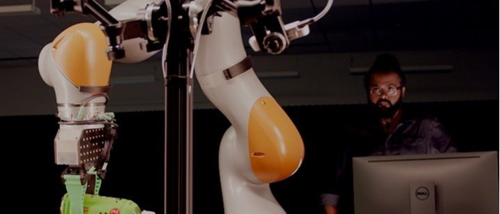

About Me
I am a Senior Research Scientist and the Tactile Perception and Control Lead at the Toyota Research Institute (TRI) in Cambridge, MA. My work focuses on tactile-perception, control, and soft-robotics for robust manipulation in home environments.
Previously, I was a Post-Doc at IIT Genova and a visiting researcher at the University of Zürich. I hold a PhD in AI from the University of Zürich (Marie Curie Fellow) and an MS from KAIST.
I also served as the Project Manager for DWENGO, a non-profit taking robotics to under-privileged children worldwide.